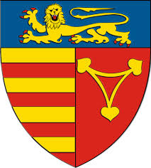

Regiunea Crisana
Stema a fost alcatuita astfel incat sa reflecte istoria sa din Evul Mediu. O reprezentare din 1881 a stemei o infatiseaza ca fiind compusa dintr-un scut taiat si despicat in partea superioara. In dreapta se regaseste acvila iesinda, iar in stanga un turn de cetate – simbolul Biharei. Campul inferior este albastru, fara a prezenta vreun element suplimentar.


Inapoi